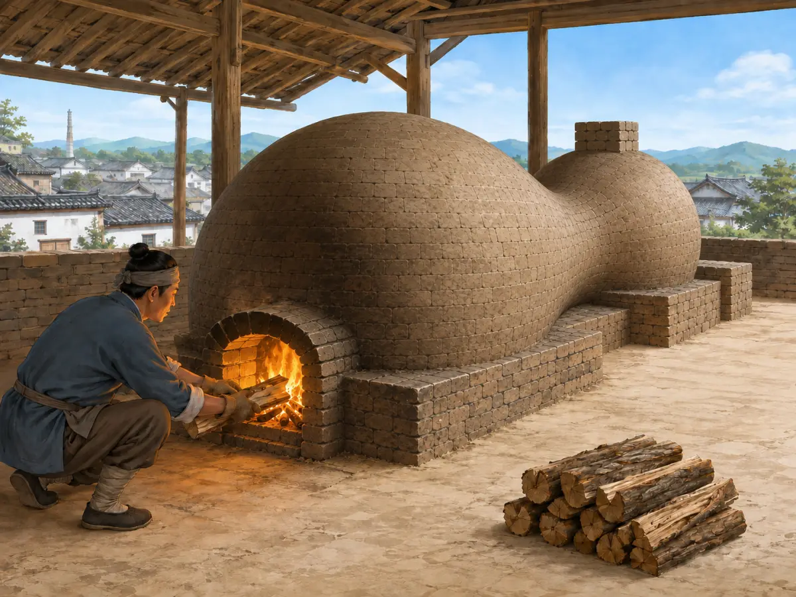

泥土怎样变成会“唱歌”的碗？
How Does Clay Become a Bowl That Can Sing?
Page 1
泥土为什么会“叮”一声？
Why Does Clay Go “Ting”?

Damp clay is almost silent, but a thin porcelain bowl may ring with a clear ting.
轻轻敲一块湿泥，几乎没有声音。可是一只薄薄的瓷碗，碰一下碗边，却可能发出清脆的：叮——
cíqì · 用瓷土等材料高温烧成的坚硬陶瓷制品。最开始的材料，明明也来自泥土和石料。陶工把它们磨细、混合、塑形成碗，再送进一座热得惊人的窑里。温度升到一千多摄氏度以后，泥坯会收缩，里面的矿物也开始发生变化，原本松软、吸水的材料慢慢变得坚硬、细密。如果配料和火候刚刚好，烧出来的瓷器可以又白又薄，有些甚至能透过一点光。
可是窑门一关，陶工也不能再伸手进去帮忙了。
Tap a lump of damp clay and you hear almost nothing. Tap the rim of a thin cíqì · 瓷器 · A hard, high-fired ceramic material made from carefully prepared clay. bowl, and you may hear a clear: Ting!
Porcelain begins with materials that come from clay and stone. Potters grind and mix them, shape the soft material into a bowl, and send it into an extremely hot kiln—a special oven used for firing ceramics. At temperatures above 1,000°C, the bowl shrinks and the minerals inside begin to change. The soft, porous body becomes hard and dense. With the right materials and firing, porcelain can become white, thin, and even slightly translucent.
Then the kiln door closes. From that point on, the fire takes over.
Page 2
一只好碗，要先闯过窑火
A Good Bowl Has to Survive the Kiln

Fifteenth-century Jingdezhen used gourd-shaped kilns; during firing, kiln workers kept feeding wood into the firebox at the front.
窑里的瓷器会缩，会变形，釉会熔化，颜色也会改变。温度、位置或者火候差一点，成品就可能开裂、歪掉，或者出现不想要的颜色。
Jǐngdézhèn · 中国最有名的瓷器城市之一。的御窑曾经专门为宫廷烧瓷。考古人员在那里发现过大量被打碎、丢弃的瓷片。能留下来的作品，往往已经经过很严格的挑选。
有一种很有名的小瓷杯叫“鸡缸杯”，只有手掌那么大。杯子上画着公鸡、母鸡和小鸡，在花草之间走动。今天，这样的Míng cháo · 1368年至1644年的中国朝代。鸡缸杯成了博物馆里极珍贵的瓷器之一。
它看起来轻巧安静，可它出生的时候，先要从一座不好控制的窑里平安出来。
Inside the kiln, clay shrinks, glaze melts, and colors change. A small difference in temperature or position can leave a piece cracked, warped, or the wrong color.
At the imperial kilns in Jǐngdézhèn · 景德镇 · A Chinese city famous for porcelain production., a Chinese city famous for porcelain, porcelain was once made for the emperor’s court. Archaeologists have found large amounts of broken and discarded porcelain there. Pieces that did not meet the required standard could be rejected.
One famous survivor is a tiny Chicken Cup, small enough to fit in your hand. Around it, a rooster, hen, and chicks wander among flowers and rocks. Cups like this were made more than five hundred years ago, and surviving examples are now treasured museum objects.
The little cup looks delicate and quiet. Its first challenge was simply getting out of the kiln successfully.
Page 3
青花的蓝色，从哪里来？
Where Did the Blue Come From?

Cobalt pigment is painted on the porcelain body, covered with clear glaze, and fired blue.
中国瓷器上最容易认出的颜色之一，就是青花的蓝。
画瓷的人先用含钴的颜料在瓷胎上画花、龙、海浪或人物，再罩上一层透明釉。烧过以后，蓝色留在釉下面，像被封进了一层玻璃。
更有意思的是，钴料并不总来自中国。有些曾从西亚和中东地区远远运来；与此同时，中国烧好的青花瓷又坐船运往那些地方。所以，一只景德镇烧出来的碗，身上可能已经藏着一段跨越几千公里的旅行。
One of the most recognizable sights in Chinese porcelain is blue painting on a white surface.
The blue comes from cobalt. Potters painted with cobalt pigment, covered the design with a clear glaze, and fired the piece. Afterward, the blue appeared beneath the glassy surface.
Some cobalt was found in China. Some traveled to China from West Asia and the Middle East. At the same time, finished Chinese blue-and-white porcelain traveled in the other direction. So a bowl made in Jingdezhen could already carry evidence of a journey stretching thousands of kilometers.
Page 4
一个碗，怎么走到了全世界？
How Did a Bowl Travel Around the World?

Chinese porcelain crossed the seas in merchant ships alongside tea and silk.
中国瓷器后来装进商船，和茶叶、丝绸一起远行。瓷器很重，而且不怕水，商人有时会把成箱的瓷器放在船舱较低的位置，还能帮助船保持稳定。
到了欧洲，这种又白、又硬、还能透一点光的材料让许多人着迷。欧洲工匠研究了很多年，才在十八世纪初成功烧出自己的硬质瓷器。
今天，世界各地的博物馆里都能看到中国瓷器：巨大的青花瓶、给皇帝烧的小杯，也有专门为海外客人制作的盘子和壶。
它们的故事都从很不起眼的材料开始。一团泥，经过人的手，再经过猛烈的火，最后变成一件可以漂洋过海、保存几百年，轻轻一敲还会发出“叮”声的东西。
叮。泥土已经不再像泥土了。
Chinese porcelain eventually filled merchant ships alongside tea and silk. Porcelain was heavy and water would not ruin it, so crates could be stored low in a ship, where their weight also helped keep the vessel steady.
When Chinese porcelain reached Europe, people became fascinated by its hard, white, sometimes translucent body. European potters experimented for years before successfully producing their own hard-paste porcelain in the early 1700s.
Today, museums around the world hold Chinese porcelain: enormous blue-and-white jars, tiny cups made for emperors, and dishes or vessels created for customers far overseas.
All of them began with surprisingly ordinary-looking materials. Hands shaped them. Fire changed them. Some crossed oceans and survived for centuries.
Then tap the rim gently—Ting. The clay no longer behaves like clay.